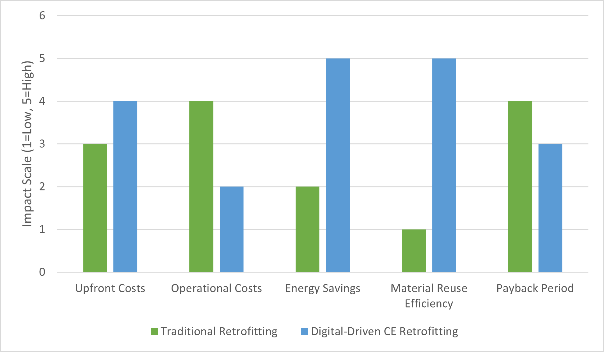
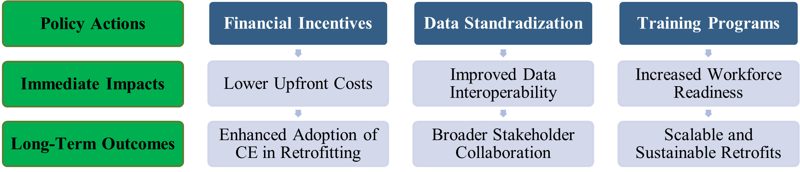

Barriers, Strategies, and Policy Pathways for Digital Circular Economy in Building Retrofits
![]()
Embedding Circular Economy principles into existing building retrofits offers the potential to reduce resource consumption, lower waste generation, and achieve significant long-term operational cost savings. However, widespread adoption is hindered by financial, regulatory, technical, and cultural barriers. This paper examines these challenges in detail and proposes practical strategies and policy pathways to overcome them.Digital technologies – including Building Information Modeling, the Internet of Things, Artificial Intelligence, and Digital Twins – serve as critical enablers in the retrofit process. Our multi-case analysis and cost–benefit perspective demonstrate that phased retrofitting approaches, open data standards, targeted skill-building initiatives, and well-designed financial incentives can significantly enhance CE outcomes. The findings provide actionable insights and a policy roadmap to accelerate the transformation of existing buildings into sustainable, circular assets.
Circular Economy, Building Retrofit, Digital Technologies, Stakeholder Engagement
1. Introduction
The construction sector has traditionally operated under a linear “take-make-dispose” model, resulting in high levels of resource extraction, waste generation, and environmental degradation [1], [2]. In response to mounting environmental concerns and resource constraints, the Circular Economy (CE) paradigm has emerged as an alternative approach. CE principles prioritize the reduction of waste, the recycling and reuse of materials, and the creation of closed-loop systems that extend the lifespan of resources [3], [4], [5].
While new construction projects increasingly adopt CE strategies, the vast majority of the built environment consists of existing buildings that require retrofitting. These structures often present challenges related to heterogeneous construction techniques, aging materials, complex regulatory environments, and stakeholder resistance [6], [7]. The retrofit process for these buildings must contend with uncertainties in material quality, legacy design limitations, and restrictions imposed by historical preservation regulations.
Digital technologies have emerged as powerful tools to address these challenges. Innovations such as Building Information Modeling (BIM), the Internet of Things (IoT), Artificial Intelligence (AI), and Digital Twins facilitate detailed data acquisition, real-time monitoring, and advanced simulation of retrofit scenarios [8], [9], [10]. When integrated effectively, these tools can optimize resource recovery, improve energy efficiency, and support decision-making throughout the retrofit lifecycle.
Despite the promise of digital solutions, empirical evidence regarding their integration in CE retrofits is still evolving. This study explores the barriers that hinder the widespread adoption of digital-driven CE retrofits, proposes strategies to overcome these obstacles, and outlines policy pathways that can support industry-wide transformation. By combining a cost–benefit perspective with a detailed analysis of digital enablers, the study provides a comprehensive roadmap for practitioners and policymakers aiming to drive sustainable retrofits.
2. Barriers to Digital CE Adoption in Retrofitting
2.1 High Initial Costs
Adopting advanced digital technologies such as BIM, IoT sensors, AI analytics, and Digital Twins requires significant upfront capital. For many building owners and small firms, these initial costs can be prohibitive. Although long-term operational savings may justify the investment, the financial burden during early implementation remains a major deterrent [11]. Integration with legacy systems adds further complexity.
2.2 Regulatory Constraints
Retrofit projects often encounter regulatory obstacles not aligned with CE practices. Existing codes may not support circular strategies such as on-site reuse or component adaptation [12]. This is especially problematic for heritage buildings requiring specialized approvals.
2.3 Technical Complexity and Skill Gaps
Digital-driven retrofits require a workforce skilled in BIM, IoT, and AI tools. However, there is a shortage of qualified professionals, especially in SMEs [13]. Integration of various tools further complicates workflows and increases the demand for cross-disciplinary knowledge.
2.4 Data Interoperability and Security
Many retrofit projects suffer from fragmented data across software platforms. Lack of open standards like IFC hinders interoperability between tools [14]. Data privacy concerns—especially from IoT monitoring—add to technical hurdles.
2.5 Cultural Resistance and Stakeholder Misalignment
Cultural inertia and lack of awareness about CE benefits lead to resistance from key stakeholders. Poor communication of long-term gains further reinforces linear mindsets [15].
3. Strategies for Overcoming Barriers
3.1 Phased Digital Implementation
Adopting a stepwise approach reduces risk and spreads costs. Initial digital audits via BIM and 3D scanning can be followed by incremental integration of IoT and AI [16].
3.2 Adoption of Open Data Standards and Common Data Environments
Utilizing IFC and implementing Common Data Environments (CDEs) reduces fragmentation and boosts performance tracking across tools [17].
3.3 Skill-Building and Cross-Disciplinary Training
Government and industry-supported training programs can bridge skills gaps. Certification in digital retrofit practices can standardize qualifications [18].
3.4 Enhanced Data Integration and Cybersecurity Measures
Standardized protocols and blockchain-based verification can improve data reliability and build stakeholder trust [19].
3.5 Stakeholder Engagement and Visualization Tools
Immersive simulations using VR and digital twins can communicate benefits clearly and support regulatory approvals [20].
4. Cost–Benefit Analysis of Digital CE Retrofitting
4.1 Upfront Costs and Operational Savings
Despite high initial investments in BIM, IoT, AI, and digital twins, energy efficiency and operational savings over time yield significant returns [8], [10].

4.2 Material Reuse and Waste Reduction Benefits
BIM audits identify salvageable components, achieving reuse rates of up to 80% and reducing disposal costs [6].
4.3 Payback Period and Long-Term Returns
Payback periods range from 6 to 12 years. Green loans and government incentives can further improve investment feasibility [21].
5. Policy Pathways
5.1 Financial Incentives and Subsidies
Subsidies, tax credits, and green loans can offset capital costs and drive adoption [22].
5.2 Data Standardization Mandates
IFC mandates and CDE regulations can streamline data integration and reporting [23].
5.3 Training and Certification Programs
Government-sponsored programs can ensure a digitally skilled workforce for CE retrofitting [24].
5.4 Long-Term Monitoring and Reporting Requirements
Mandating use of IoT and AI for lifecycle monitoring promotes transparency and performance optimization [25].
| Barrier | Corresponding Strategy | References |
|---|---|---|
| High initial investment | Phased roll-out of digital tools | [11], [12] |
| Regulatory constraints | Early stakeholder engagement; VR-based demonstrations | [12], [15] |
| Technical complexity | Cross-disciplinary training and certification programs | [13], [18] |
| Data fragmentation | Adoption of open data standards and CDEs | [14], [17] |
| Cultural resistance | Visualization tools for stakeholder engagement | [15], [20] |

6. Conclusion
This paper has examined the barriers, strategies, and policy pathways essential for the successful adoption of digital-driven Circular Economy retrofits. While challenges such as high costs, technical gaps, and regulatory hurdles persist, phased implementation, open data standards, and financial incentives can support industry transformation.
By leveraging digital tools like BIM, IoT, AI, and digital twins, stakeholders can achieve material reuse rates of 40–80% and energy savings between 15–70%. The cost–benefit case is compelling, especially when long-term returns and green policies are considered.
The future of CE retrofits depends on scalable frameworks, cross-sector training, and ongoing research into emerging technologies and interoperability standards.